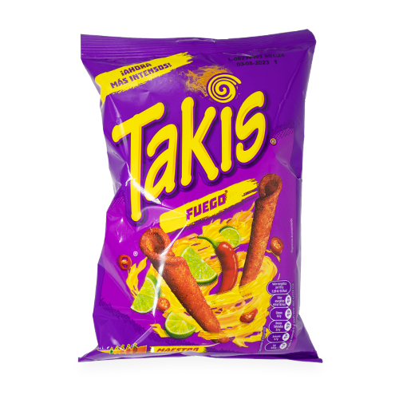
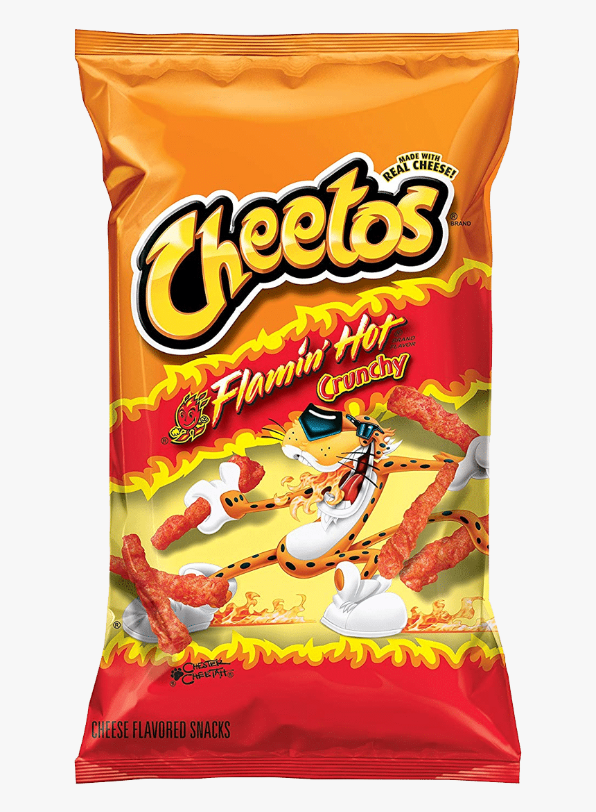
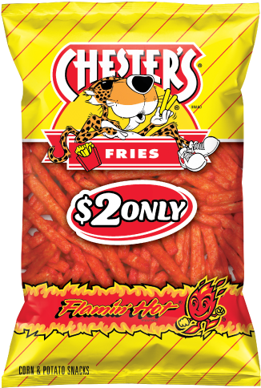
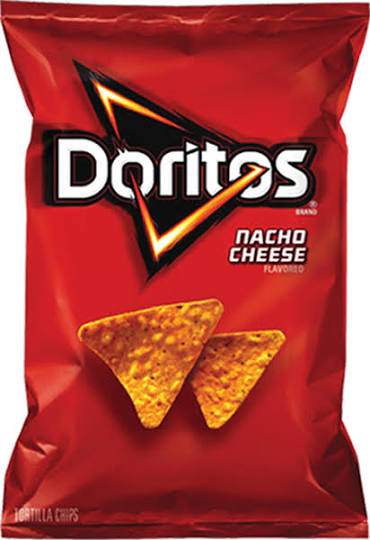
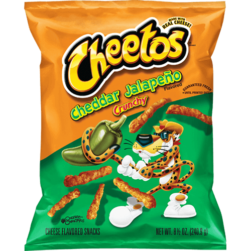
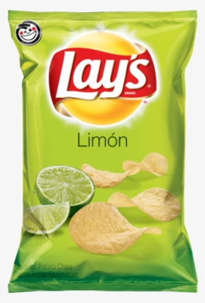

The Hot Chip Lineup
These are the six chips I actually reach for. Most of them are spicy and even the ones that aren't get hot sauce added to them. Each one earned its spot by being the bag I keep buying, even when I'm on a diet.

Takis Fuego
Rolled corn chip | Barcel | Chile pepper & lime
Takis are coated in a chili powder that I can't get enough of. The lime flavor makes it even better. It's one of the chips that my kids share my taste with.

Flamin' Hot Cheetos
Cheese snack | Frito-Lay | Cayenne & paprika
It's a classic. The heat used to be better, but the flavor is still there. While I'll always prefer the original recipe, hot sauce keeps it in the running.

Chester's Flamin' Hot Fries
Corn & potato snack | Chester's | Flamin' Hot
These chips are the most dangerous for me. I can run through the small bags in my pantry whenever we have them stocked.

Doritos Nacho Cheese
Tortilla chip | Frito-Lay | Nacho cheese
Another classic. The crunch is great and it's an easy chip to bring to a party or a picnic.

Jalapeño Cheddar Cheetos
Cheese snack | Frito-Lay | Jalapeño & cheddar
Beyond Flamin' Hot, this is a chip I didn't realize I'd like this much until I found the right combo. While it's good on its own, adding hot sauce and a squeeze of lime makes it even better.

Lay's Limón
Potato chip | Frito-Lay | Lime
The green bag. It's well known for being filled mainly with air, but the flavor is great. It has more taste than the original Lay's, which is why I keep buying it.